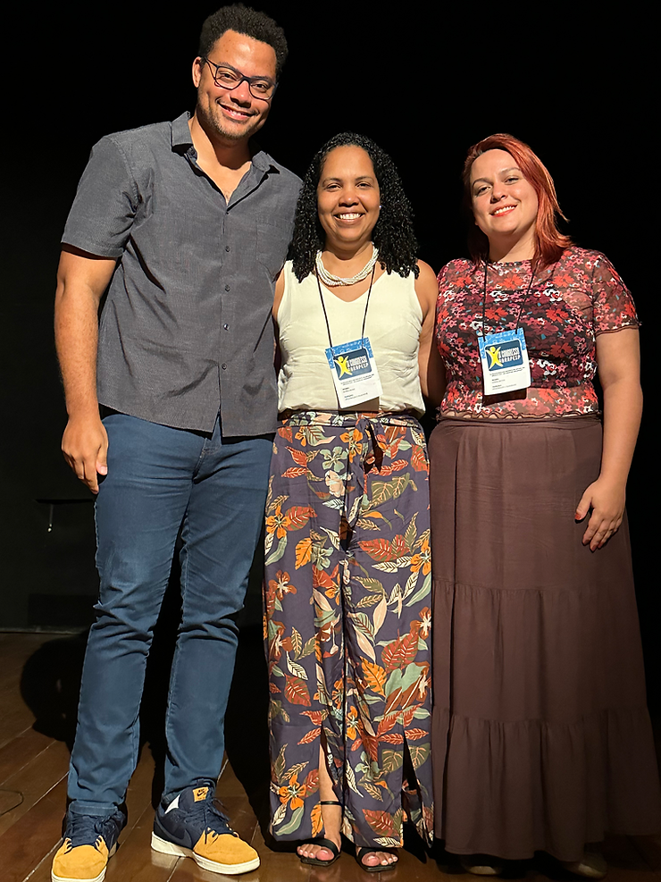

Durante o IX Congresso da ABRAPESP tivemos a Mesa Redonda: “Psicologia do Esporte Decolonial” composta por Neilton Ferreira Junior, Marina Mattos e Daniele Muniz sob a mediação de Rodrigo Pieri.
O tema atual e provocante cativou os congressistas que aplaudiram a mesa de pé. A atividade também teve como desdobramento a formação de um Grupo de Trabalho sobre Relações Étnico-raciais dentro da Associação, proposto e aprovado por aclamação em Assembleia Geral.
E para completar, a Comissão Organizadora do Congresso fez uma parceria com a Prefeitura de Petrópolis e com o COPIR (Coordenadoria de Promoção de Igualdade Racial Petrópolis), promovendo essa discussão em um espaço público (Praça da Liberdade) juntamente com lideranças locais e fechando o dia com um show de Soul oferecido pela parceria com o COPIR.
Em vistas deste sucesso e da proximidade com o Dia da Consciência Negra, fizemos uma entrevista com os três palestrantes para trazer um pouco mais do tema para vocês.
ABRAPESP: Oi Neilton! Primeiro obrigada pela maravilhosa mesa. Queria que você comentasse como foi trazer esse tema pela primeira vez dentro de um congresso da ABRAPESP.
NEILTON FERREIRA: Obrigado! Foi um desafio do ponto de vista do lugar de onde eu parto, que é a Educação Física e de uma relação com a Educação Física muito próxima da sociologia. Estar entre os colegas da psicologia, produzindo junto comigo uma mesa coletiva, facilitou o processo. Agora, temos como tarefa revisitar esses temas e tentar produzir alguma coisa inicial, embrionária, mas que não recusa as interpelações que têm vindo dessas demandas do ponto de vista teórico epistemológico, que não bate só na psicologia, mas em todas as áreas das ciências humanas que estão precisando, hoje, rever o seu ponto de partida epistêmico para materializar, enfim, a questão que a gente tanto espera que é o reconhecimento, a diferença, que é a produção de solidariedades internacionais, nacionais, locais.
Eu acho que foi por aí que a gente caminhou. Espero que isso seja seminal do ponto de vista de produção de outros eventos, outros escritos, outros textos e ações da psicologia do esporte brasileira, no sentido de produzir ações e formar psicólogos para que eles possam ser amparados por outras teses, outras perspectivas teóricas, para que eles possam participar de um processo que eu gosto de chamar de redimensionamento do tamanho original do mundo.
ABRAPESP: E a partir disso você tem algum convite, provocação ou recado que você gostaria de deixar?
NEILTON FERREIRA: Leiam Fanon, leiam Fanon! Leiam Bell Hooks. Voltem a ler Stuart Hall! E vamos tentar fazer um casamento cada vez mais forte com as produções do pensamento negro e indígena local. Um casamento e aproximações com a psicologia, para tentar… não digo internacionalizar a nossa produção… mas nacionalizar e radicalizar um pensamento autônomo e verdadeiramente autodeterminado, que é o que a gente quer.
ABRAPESP: Show! Muito obrigada!
ABRAPESP: Marina, você que está aqui e também participou da Mesa. O que você acha que significa a inauguração desse tema nesse espaço do Congresso ABRAPESP?
MARINA MATTOS: Foi uma inauguração aqui, embora não seja um tema recente, mesmo na ABRAPESP. É interessante ver como o Congresso todo foi atravessado por ele e não ficou uma mesa desconectada trazendo uma questão racial a ser debatida e a ser conversada somente com quem já conversa.
É importante que a gente consiga sensibilizar cada vez mais pessoas para a importância de compreender não somente o que é ser um corpo negro no esporte, mas também o que é ser essa pessoa branca. Essa racialização, esse letramento dessa pessoa branca que precisa compreender que se ela não estabelece responsabilidades em relação a ruptura de alguns pactos, de algumas conexões que estão aí estabelecidas, pouco a gente consegue fazer somente pensando que vamos tratar todos iguais. A gente já está partindo de uma desigualdade, não tem como a gente esconder e colocar isso em segundo plano, porque está no início de tudo. Então o recado importante, nesse e em todos momentos, é a gente continuar sustentando como fazer enfrentamentos coletivos para pensar uma prática de psicologia do esporte que consiga enfrentar essas desigualdades mais contundentemente. Que isso, saia desses espaços acadêmicos e que ocupe os nossos lugares de prática também, entendendo que essa conexão não é rompida.
ABRAPESP: E você teria um recado ou provocação, aproveitando o dia 20 de novembro?
MARINA MATTOS: Vamos pensar os nossos corpos além de pensar os corpos atletas, os corpos funcionais ditos disfuncionais. Vamos pensar os nossos corpos nessa história e na relação com os outros corpos. Acho que é importante.
ABRAPESP: Perfeito. Muito obrigada.
ABRAPESP: Daniele, o que significou para você trazer o tema das questões étnico-raciais nesse Congresso da ABRAPESP?
DANIELE MUNIZ: Recebi o convite para compor a mesa de encerramento com muita alegria, especialmente por se tratar de uma temática tão cara pra mim.
Em 15 anos de profissão essa foi a primeira vez que fui chamada para participar como palestrante em um Congresso de Psicologia. Sempre participei de vários eventos da área, mas normalmente na posição de ouvinte ou membro da comissão organizadora atuando nos bastidores. Estar nos bastidores não é uma grande questão quando entendida isoladamente. No entanto, se racializarmos o debate acerca deste ponto podemos pensar que existe uma prática sistemática nas instituições de silenciamento e apagamento das intelectualidades negras. O racismo científico não permite que pessoas não brancas ocupem posições de destaque por não reconhecer nelas erudição e competência técnica ainda que suas produções evidenciem o contrário. A partir desta contextualização, atuar nos bastidores e sempre neste lugar pode ser um reflexo da estrutura racista que insiste em apartar das posições de prestígio aqueles que o sistema colonial historicamente enclausurou nos porões e senzalas para servir aos seus senhores. Numa atualização desta estrutura, usualmente o intelectual negro é o melhor assistente do intelectual branco. O braço direito e esquerdo que prepara o cenário para o seu “mestre” branco brilhar. Os bastidores podem ser as novas senzalas se quem lá está de lá nunca sai. Subverter essa lógica é difícil e doloroso.
Neste sentido, a iniciativa da ABRAPESP de privilegiar o protagonismo dos seus associados negros e evidenciar seus saberes inaugura um novo movimento institucional na Psicologia do Esporte.
Fazer parte desta mudança de paradigmas é motivo de muita satisfação.
Confesso que não foi uma tarefa fácil conduzir a apresentação de um tema tão complexo de forma objetiva e direta sem acessar gatilhos. Logo vi que não seria possível, mas entendi que não deveria me esquivar. Compreendi a participação na mesa como uma experiência e só deixei acontecer. E eu gostei demais!
ABRAPESP: E você teria uma dica/sugestão/provocação para os demais colegas nesse Dia da Consciência Negra?
DANIELE MUNIZ: A sugestão é que não esperem o dia 20 de novembro para conhecerem os intelectuais negros. Leiam, estudem, ouçam, assistam pessoas que pensam e se dedicam aos estudos das questões raciais porque elas são a base estruturante das relações sociais no Brasil. Abram-se para outras epistemologias. Se aproximem dos estudos decoloniais e reflitam sobre seus lugares no mundo.
ABRAPESP: Muito obrigada, Dani, por trazer o tema de forma tão vívida e provocativa.